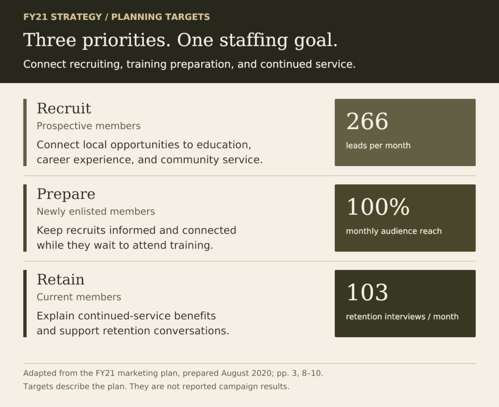
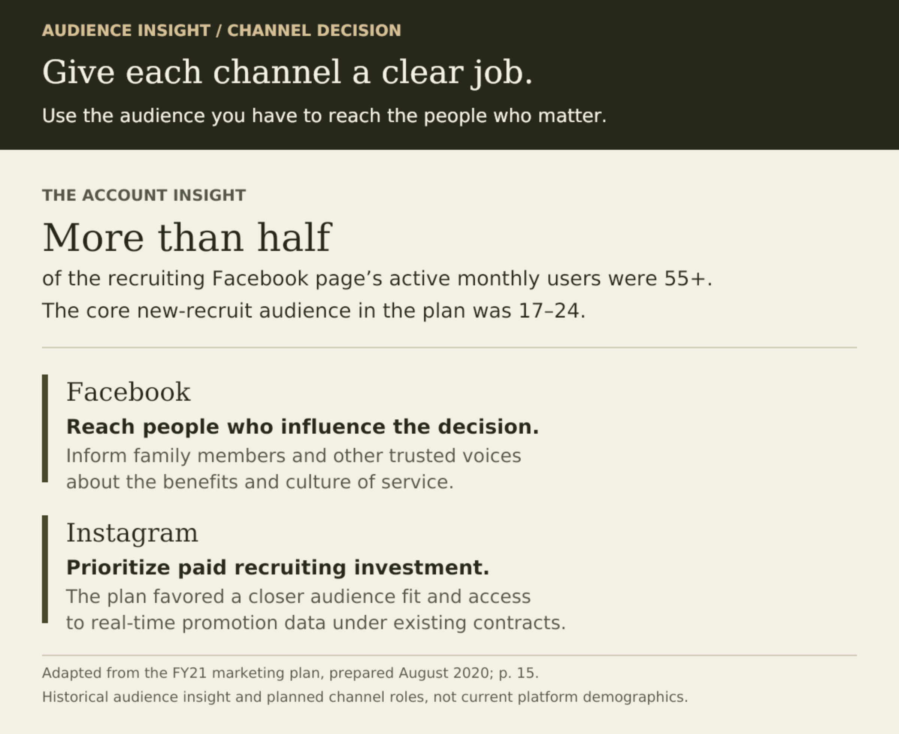
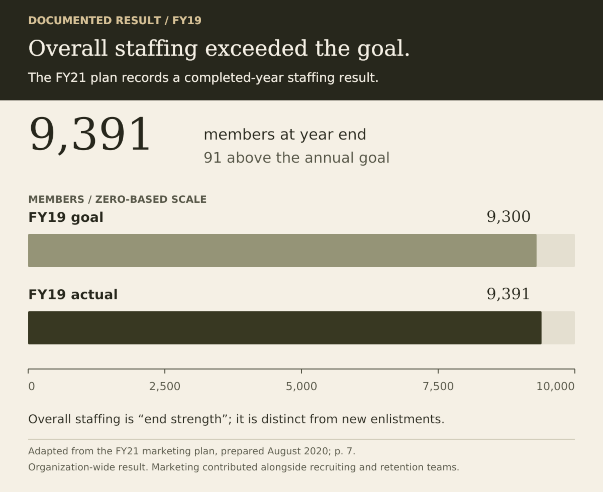

Case study / Statewide recruiting strategy
Growth takes more than recruiting.
I connected a $1.1M annual marketing budget, local staffing needs, and a statewide recruiting network to one plan. It linked acquisition, preparation for training, and retention so marketing supported the full staffing mission.
Explore the strategy ↓At a glance
- What I owned
- I led statewide marketing strategy, budget decisions, and execution with recruiters, agencies, and vendors from 2017–2021.
- The decision
- Use market, vacancy, and audience evidence to connect recruiting, training preparation, and retention to the overall staffing mission.
- The outcome
- Overall staffing goals exceeded each year during 2017–2021. My 2020 annual plan was selected as a blueprint for all 54 states and territories.
More leads would only solve part of the problem.
The South Carolina Army National Guard needed enough trained members to meet its mission. Recruiting contributed to that goal, but so did helping new recruits reach training and retaining experienced members. Filling the pipeline while losing people along the way would leave the larger problem unresolved.
From 2017–2021, I led statewide marketing strategy, budget decisions, and execution with recruiters, agencies, and vendors. The program supported 116 recruiters across 50 locations. My responsibility was to turn statewide priorities into audience, channel, and investment decisions that local recruiters could use.
Strategy in practice
Turn mission priorities into a working plan.
The FY21 plan, prepared in August 2020, combined market assessment, past performance, vacancy data, and leadership priorities. Those inputs shaped where recruiting support was needed, how to address training losses and retention, and where digital channels could help as COVID-19 disrupted schools and in-person recruiting.
I organized the plan around three audiences and the next action each needed to take. Recruiting messages connected local opportunities to personal motivations. Communications for newly enlisted members supported preparation for training. Retention messaging explained the benefits and options of continued service.


Read the planning targets
- Recruit: Generate at least 266 leads per month to support entry-level recruiting needs.
- Prepare: Reach 100% of newly enlisted members in the Recruit Sustainment Program each month.
- Retain: Support the retention team’s target of 103 continued-service interviews per month.
Give each channel a reason to be in the plan.
Our account analysis found that more than half of the recruiting Facebook page’s active monthly users were 55 or older. That was a different audience from the 17–24-year-olds central to new recruiting. I gave Facebook a role in reaching influential adults and prioritized Instagram for paid recruiting. Audience fit and access to real-time promotion data under existing contracts informed that choice, rather than assuming every channel should serve the same purpose.


Make statewide strategy useful locally.
Different jobs were available in different parts of South Carolina. In a region with a transportation unit, we used paid social ads about becoming a truck driver and supplied local recruiters with transportation-focused materials. The message connected a nearby military opportunity with skills an applicant could use in a civilian career.
The creative below is one execution example. My responsibility for this piece was design and distribution approval.

Keep the investment connected to the mission.
We tracked lead progression in a CRM through qualification and enlistment. The FY21 plan also specified monthly reviews of staffing, vacancies, market share, lead profiles, and audience feedback, with quarterly comparisons for training completion. That review structure connected channel activity to the organization’s needs.
I introduced paid social and programmatic media into the mix. Across my tenure, the annual marketing budget grew from $250,000 to $1.1 million. The FY21 plan called for flexibility to redirect funds when a media choice was not performing as expected.
Measure success against the right goal.
South Carolina exceeded its overall staffing goals, called end strength, each year during 2017–2021. Marketing contributed alongside recruiting, training, and retention teams. Overall staffing is distinct from the number of new enlistments.
The plan records a historical example: FY19 ended with 9,391 members against a goal of 9,300, or 91 above target. That organization-wide result predates the FY21 plan. It provides context for the staffing mission, rather than measuring the later plan’s impact.


In 2020, the National Guard Bureau Strength Maintenance Division selected my annual plan as a blueprint for all 54 states and territories.
Next project
Provider-search launch